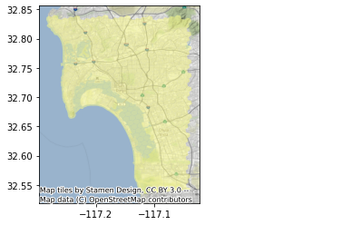

Build a H3 grid for the San Diego region¶
from IPython.display import display_markdown
display_markdown(open("README.md").read(), raw=True)
Infrastructure¶
To create a container that includes h3 save the following on a file called Dockerfile:
FROM darribas/gds_dev:4.1
USER root
RUN wget -O - https://apt.kitware.com/keys/kitware-archive-latest.asc 2>/dev/null | sudo apt-key add - \
&& apt-add-repository 'deb https://apt.kitware.com/ubuntu/ bionic main' \
&& apt-get update \
&& apt-get install --yes cmake
USER $NB_UID
RUN pip install h3
And build the container by running the following from the same folder where the file is stored:
docker build -t gds_h3 .
When if finishes, you should be able to launch the gds_h3 container and run this notebook from there.
%matplotlib inline
from h3 import h3
import geopandas
from shapely.geometry import Polygon
import contextily as ctx
import cenpy
Region to cover¶
sd = geopandas.read_file("sd_city_centre.geojson")
ax = sd.plot(alpha=0.25, color="orange", figsize=(9, 9))
ctx.add_basemap(ax, crs=sd.crs.to_string())

Build H3 geography¶
%time hexs = h3.polyfill(sd.geometry[0].__geo_interface__, 8, geo_json_conformant = True)
CPU times: user 8.19 ms, sys: 861 µs, total: 9.05 ms
Wall time: 10 ms
polygonise = lambda hex_id: Polygon(
h3.h3_to_geo_boundary(
hex_id, geo_json=True)
)
%time all_polys = geopandas.GeoSeries(list(map(polygonise, hexs)), \
index=hexs, \
crs="EPSG:4326" \
)
CPU times: user 101 ms, sys: 7.66 ms, total: 109 ms
Wall time: 109 ms
ax = all_polys.plot(alpha=0.5, color="xkcd:pale yellow", figsize=(9, 9))
ctx.add_basemap(ax, crs=all_polys.crs.to_string())
ax.set_title(f"{all_polys.shape[0]} Hexagons");

Clip ocean out¶
There are quite a few hexagons that fall within the ocean. Let’s get rid of them. For that, we will pull down the polygon for San Diego county using cenpy:
census = cenpy.Decennial2010()
tracts = census.from_msa("San Diego, CA", level="tract")
/opt/conda/lib/python3.7/site-packages/pyproj/crs/crs.py:55: FutureWarning: '+init=<authority>:<code>' syntax is deprecated. '<authority>:<code>' is the preferred initialization method. When making the change, be mindful of axis order changes: https://pyproj4.github.io/pyproj/stable/gotchas.html#axis-order-changes-in-proj-6
return _prepare_from_string(" ".join(pjargs))
/opt/conda/lib/python3.7/site-packages/pyproj/crs/crs.py:55: FutureWarning: '+init=<authority>:<code>' syntax is deprecated. '<authority>:<code>' is the preferred initialization method. When making the change, be mindful of axis order changes: https://pyproj4.github.io/pyproj/stable/gotchas.html#axis-order-changes-in-proj-6
return _prepare_from_string(" ".join(pjargs))
Now these geometries include also some ocean:
ax = tracts.plot(alpha=0.5, color="xkcd:pale green")
ctx.add_basemap(ax, crs=tracts.crs.to_string())

It turns out that part is a separate polygon that may be removed easily:
tracts.head()
| GEOID | geometry | NAME | state | county | tract | |
|---|---|---|---|---|---|---|
| 0 | 06073018200 | POLYGON ((-13066573.290 3920769.610, -13066530... | Census Tract 182, San Diego County, California | 06 | 073 | 018200 |
| 1 | 06073018601 | POLYGON ((-13067719.770 3922939.420, -13067631... | Census Tract 186.01, San Diego County, California | 06 | 073 | 018601 |
| 2 | 06073018000 | POLYGON ((-13064524.900 3917063.650, -13064338... | Census Tract 180, San Diego County, California | 06 | 073 | 018000 |
| 3 | 06073017900 | POLYGON ((-13064042.110 3917657.290, -13064035... | Census Tract 179, San Diego County, California | 06 | 073 | 017900 |
| 4 | 06073018510 | POLYGON ((-13064367.720 3923018.450, -13064295... | Census Tract 185.10, San Diego County, California | 06 | 073 | 018510 |
tracts_land_one = geopandas.GeoDataFrame(
{"geometry": [tracts.query("GEOID != '06073990100'").unary_union],
"id": ["one"]
}, crs=tracts.crs)
ax = tracts_land_one.to_crs(epsg=4269).plot()
all_polys.to_crs(epsg=4269).plot(color="xkcd:pale yellow", ax=ax)
<matplotlib.axes._subplots.AxesSubplot at 0x7fdbf6eeb090>

Let’s convert all_polys into a GeoDataFrame:
h3_all = geopandas.GeoDataFrame({"geometry": all_polys,
"hex_id": all_polys.index},
crs=all_polys.crs
)
We’re an overlay away from our target:
%%time
h3_land = geopandas.overlay(h3_all,
tracts_land_one.to_crs(h3_all.crs),
how="intersection"
)
CPU times: user 3.43 s, sys: 43 ms, total: 3.47 s
Wall time: 3.46 s
ax = h3_land.plot(alpha=0.5, color="xkcd:pale yellow")
ctx.add_basemap(ax, crs=h3_land.crs.to_string())

Write out to GPKG¶
! rm sd_h3_grid.gpkg
h3_land.drop("id", axis=1).to_file("sd_h3_grid.gpkg", driver="GPKG")
Tract Vs H3 geographies¶
Get tracts only within the grid:
shp = geopandas.GeoDataFrame(
{"geometry": [h3_land.unary_union],
"id": ["one"]
}, crs = h3_land.crs).to_crs(tracts.crs)
sub = geopandas.overlay(tracts, shp, how="intersection")
Compare:
ax = sub.plot(facecolor="k", edgecolor="xkcd:lilac", figsize=(9, 9))
h3_land.to_crs(sub.crs).plot(facecolor="none", linewidth=0.5, edgecolor="xkcd:light aqua", ax=ax)
ctx.add_basemap(ax, crs=sub.crs.to_string())

[Download the sd_h3_grid.gpkg file]